Version 0.6.0, free to use
Tandem Watch Party
A free app for watching videos and movies in sync with friends, each on their own screen.
Tandem lets you and your friends watch together from different places. It works peer to peer, so there is no account to make and no server holds your files.
It runs on Linux, Windows, Android phones and tablets and Android TV.
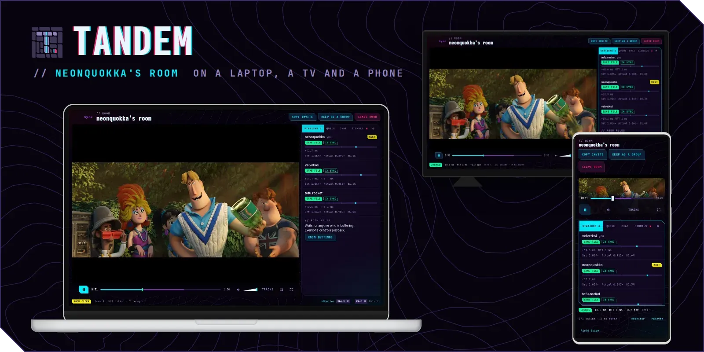
How a watch goes
Start a watch party in four steps
Each person's device is called a Station. The Stations in a room agree on one timeline and keep to it, so nobody has to count down to three and press play together.
Open a room
One of you presses Open room and adds a film: a file, a folder, a magnet link or a .torrent file.
Copy the invite
They press Copy invite and send the link in any chat app, where it shows up as a normal link.
Join the room
The others open the link and press Join room. It opens the room in their Tandem app.
Press play
Anyone presses play, and every screen starts on the same frame. A pause or a skip happens for everyone too.
Sync
Watch videos in sync with friends, even when the host leaves
Every screen plays the film itself at full quality, so nobody watches a blurry screen share. Tandem keeps the players together by nudging each one a touch faster or slower, which nobody notices. In tests on one computer, the screens stayed about 10 ms apart.
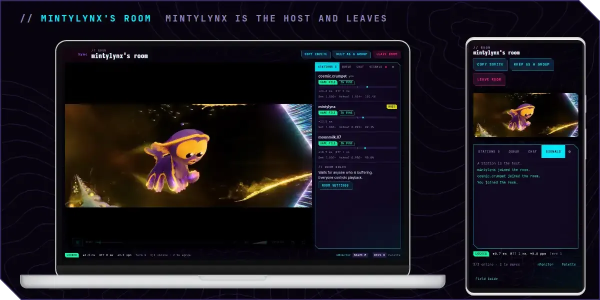
The Stations choose a host among themselves. If the host leaves, crashes or loses its connection, another Station takes over and the film carries on. People who join late start at the right moment, and if someone's picture stalls, the room waits for them for up to 20 seconds, or less if you press Continue without them.
The host can also set a Showtime countdown, a few minutes ahead or at a time of day, so everyone counts down together and starts on the same frame. It runs on the room's clock, so a computer whose clock is wrong still starts with everyone.
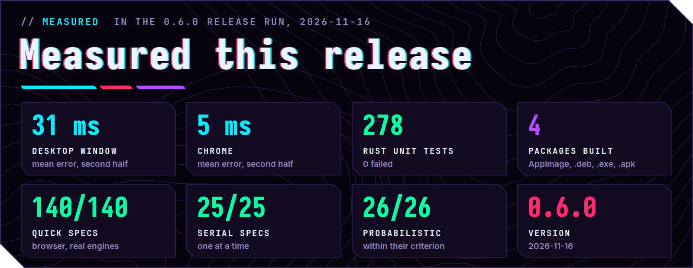
Files, folders, magnets
Bring the film as a file, a folder, a magnet link or a torrent
Only one person needs the video. Tandem streams it peer to peer to the friends who do not have it, checks every piece as it arrives, and starts playing as soon as there is enough.
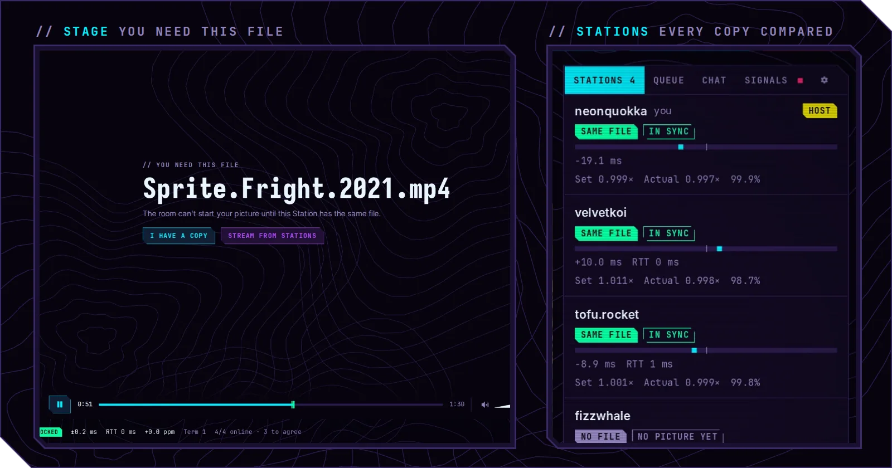
When friends bring their own copies, Tandem compares them and marks each one Same file Probably same Same length or Different file, so a wrong download shows up before the film starts.
A magnet link fetches nothing until each person chooses how to get it. BitTorrent starts only when you pick it, and someone in the room who is already getting the film can pass it on to you instead, even on a network that blocks BitTorrent.
Only you see the change
Choose your own subtitles, audio and picture
Each of these choices is yours alone. Nobody else in the room sees a change, and the room stays in sync while you make it.
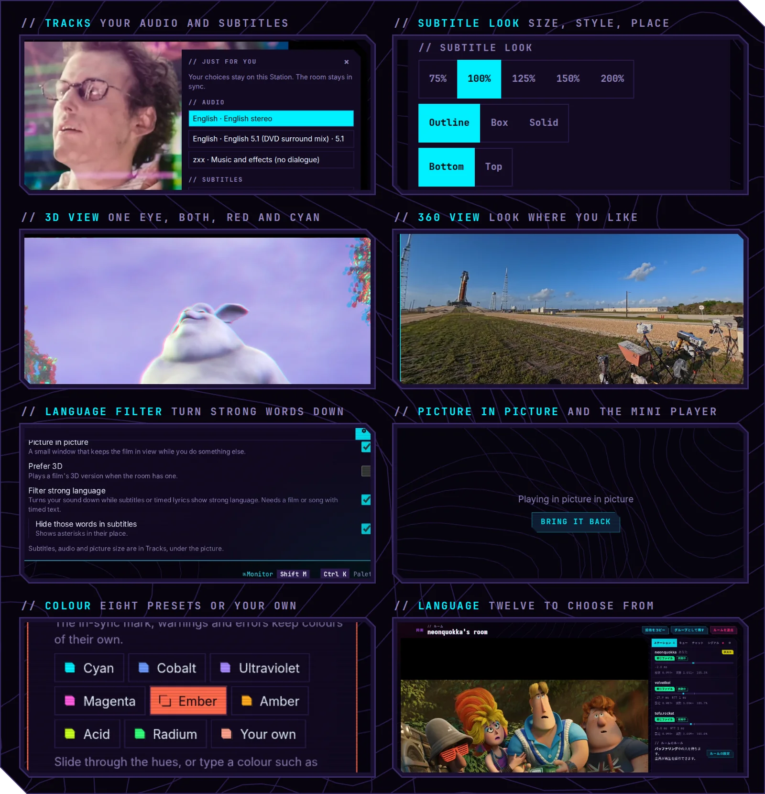
- Sound and subtitles. Pick your own audio track and subtitles, add your own subtitle file, change how subtitles look and fix their timing, and set your own volume.
- Picture. Choose Fit or Fill, a smaller picture size for a device that stutters, how to watch a 3D film (one eye, both eyes or red and cyan glasses), and where you look in a 360 video.
- Language filter. Turn your own sound down on strong language in subtitles and lyrics, and hide those words with asterisks.
- Picture in picture. Keep watching in a small window in Chrome, Edge, Firefox and on Android, or in the desktop app's mini player, while you do something else.
- Look and feel. Choose the interface language (there are twelve), the colour (eight presets or your own), the logo, the boot animation and interface sounds.
New in 0.6.0
Friend groups for regular movie nights
Keep the people you watch with as a friend group. Any member can set a schedule, such as every Friday at 9 PM, and everyone sees it in their own time zone and gets a reminder ten minutes before. You can suggest films and vote on them, answer yes, maybe or no, and jump into the group's room while the others are already watching.
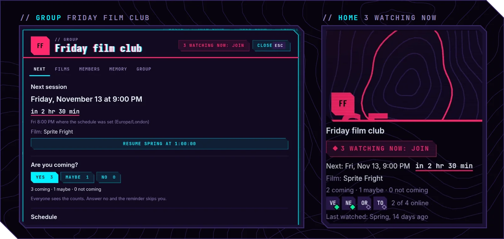
A group lives only on its members' devices. There is no server for it: its schedule, votes, chat and memory of what you watched pass from member to member.
Linux, Windows, Android and TV
Tandem on Linux, Windows, Android and Android TV
Computers, phones, tablets and TVs can all share one room, in any of twelve languages. On a TV the remote moves around the room, and its play key plays for everyone. Most video formats play as they are, and Tandem converts the rest with FFmpeg as you watch.
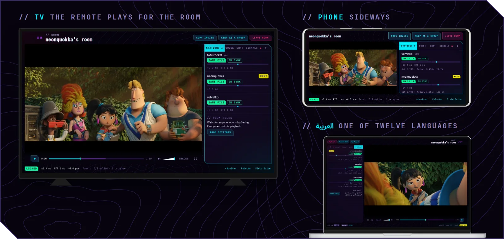
Everything else
More of what Tandem 0.6.0 does
- 01
Chat and reactions over the film
The chat sits beside the picture, and six reactions rise over it with the sender's name. Someone who joins late can read what they missed.
- 02
Slow internet or a small disk still works
A Station on a slow connection gets a smaller stream instead of holding everyone up. You can download a film before the watch, or watch without saving it when your disk is nearly full.
- 03
Almost any file plays
What a screen cannot play, Tandem converts by itself, on the graphics chip when one works. HDR films are adjusted for ordinary screens, and surround sound is mixed to stereo.
- 04
Several versions of one film
Add a film's 3D file beside its 2D one, and each person watches the version their screen suits, on one shared timeline.
- 05
A queue for films and songs
Line up films and songs to play one after another. Songs show their cover, a visualiser and their lyrics as they are sung.
- 06
Rules for the room
The host can keep the controls or let anyone pause and skip. For a big screening, new people can join as observers who watch along without voting.
And there is more
- The home screen shows the rooms you were in that are live now, and you can jump back in without a new invite.
- Cover art comes from the film itself, or from TMDB if you add your own key.
- The Monitor shows the whole watch: who is in sync, the network and who did what.
- A share picture sums up your watch as a square image, and you choose what goes in.
- Android lets you share videos, music, invites and magnet links to Tandem from any app.
- Updates are signed and offered on the home screen, never during a film.
- A keyboard, a screen reader, media keys and a TV remote all work.
- Arabic mirrors the whole interface, which reads right to left.
Pictures
More pictures of Tandem
Every picture is the real app, playing open movies from Blender Studio. The names in them are made-up handles.
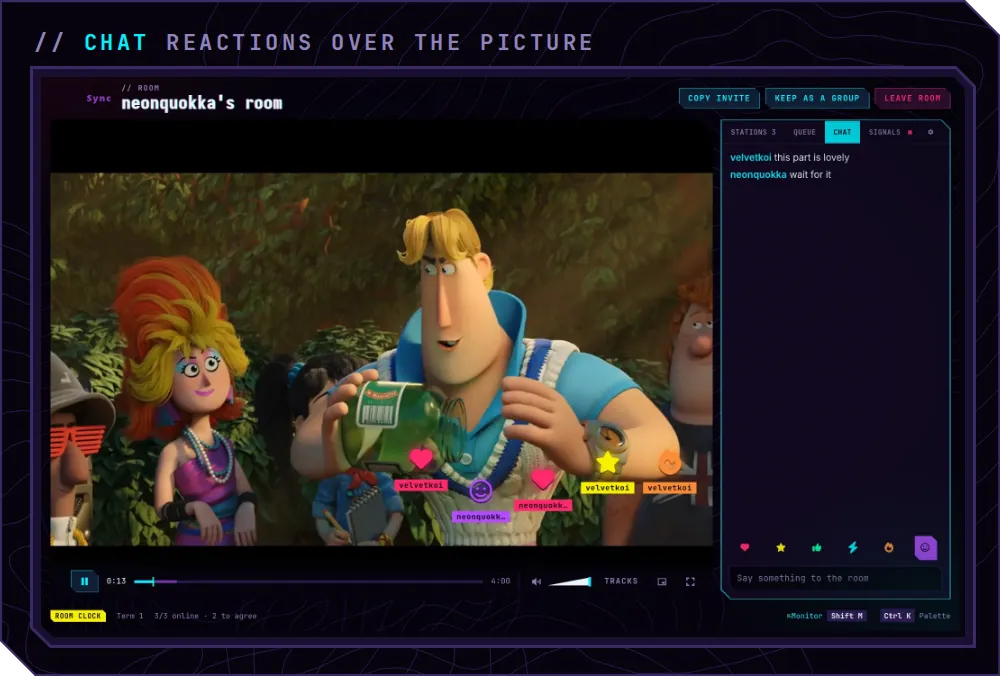
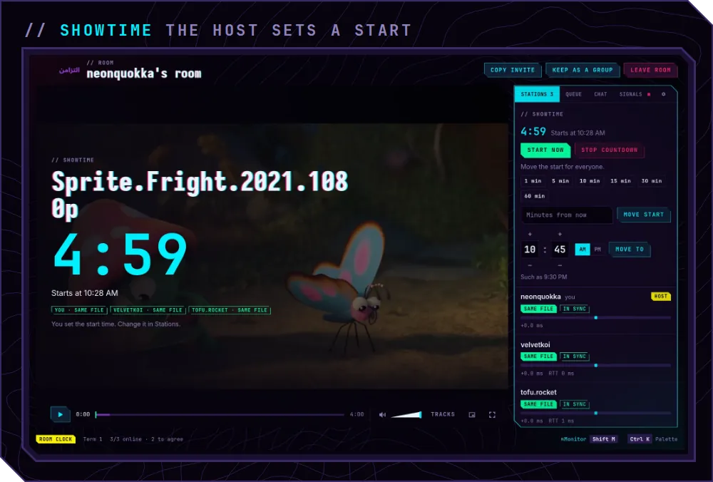
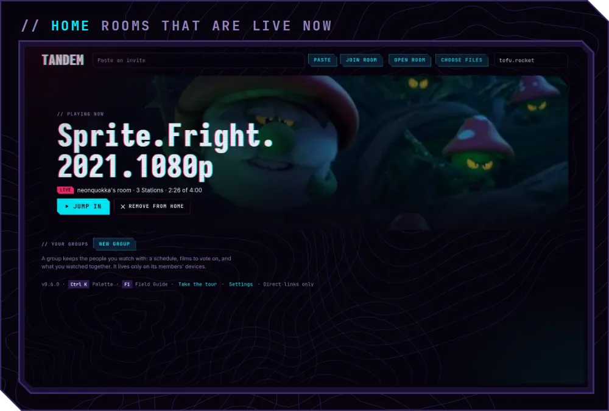
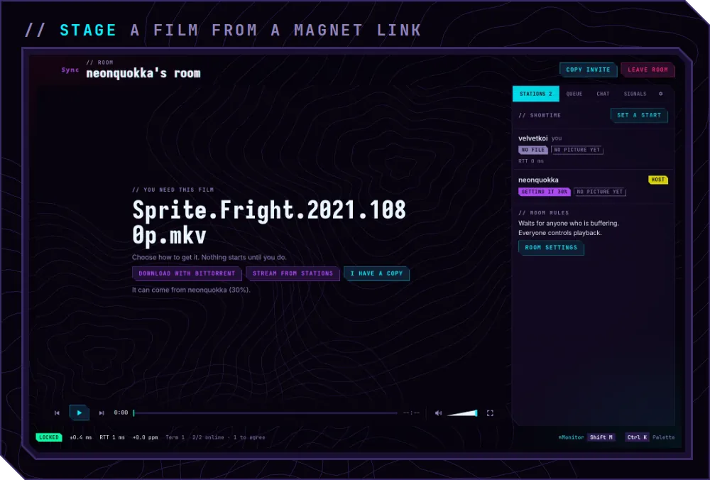
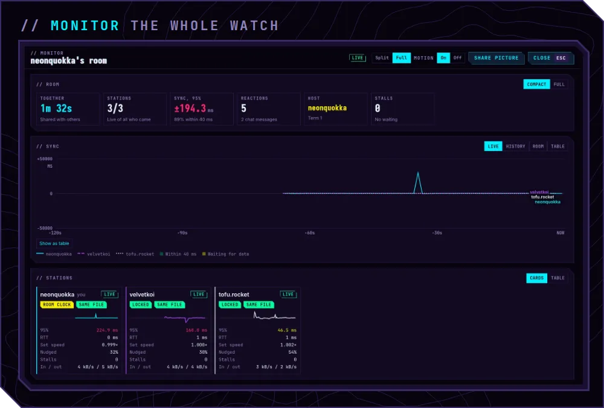
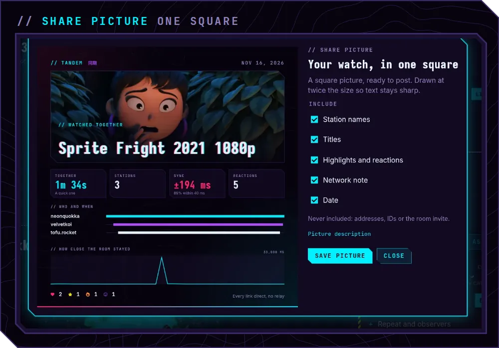
Get Tandem
Download Tandem 0.6.0 for Linux, Windows and Android
The app is the same everywhere, and everyone in a room should use the same release. FFmpeg is included in every package.
Public downloads open soon.
Linux, any distribution
Tandem_0.6.0_amd64.AppImage
Opening soonIt is self-contained: make it executable and run it.
Debian and Ubuntu
Tandem_0.6.0_amd64.deb
Opening soonThis is the smaller download. It uses your system's WebKit and GStreamer.
Windows 10 and 11
Tandem_0.6.0_x64-setup.exe
Opening soonThe installer is not code-signed yet, so SmartScreen will warn you before it runs.
Android phones, tablets and TV
Tandem_0.6.0_arm64.apk
Opening soonIt needs Android 7 or later on 64-bit ARM. Allow installs from this source when Android asks.
Updates are signed, and the app offers them on the home screen, never during a film.
Comparison
How Tandem compares with other ways to watch together
Tandem is for videos you already have as files. If you want to watch Netflix or another streaming service together, Teleparty is the tool for that, and if you want to talk while you watch or share anything on your screen, Discord does more. The comparison says where each one is better, with sources.
- Tandem compared with Teleparty, Syncplay, Discord, Plex and JellyfinA table of what each plays, who needs the film, accounts, servers, cost and sync, and where the others do better.
- A free Teleparty alternative for your own videosWhat changes when the film is a file you have rather than a streaming service.
- A Syncplay alternative that needs no serverWatch in sync when only one person has the file, with no Syncplay server to pick or run.
- How to watch a movie together onlineThe steps from opening a room to pressing play, with pictures of each one.
Questions
Questions people ask about Tandem
Is Tandem free?
Yes. Tandem is free to download and use. There are no ads, no paid tier and no account.
Do I need an account?
No. There is no sign-up and no login. You choose a name for your Station, and that is all.
Can friends without the app join?
Today everyone in the room needs the Tandem app, on Linux, Windows or Android. Watching from an invite in a browser, with nothing to install, is paused for now and coming back soon.
Which devices does Tandem run on?
Linux, Windows 10 and 11, and Android 7 or later on 64-bit ARM phones, tablets and Android TV.
There is no Mac release yet. A Mac app for Apple silicon is ready and comes with the next release. There is no iPhone or iPad version.
Does everyone need a copy of the film?
No. One copy in the room is enough, because the others can stream it from the Stations that have it. Anyone can also bring their own copy, and Tandem checks that it is the same file.
Does my film go through a server?
Not in a form anyone can read. Stations connect to each other directly whenever they can, over QUIC, which is encrypted and authenticated, and each Station proves it holds the room's secret before it is let in.
When two Stations cannot reach each other directly, for example on a strict network, their traffic goes through a public relay. The traffic stays encrypted between the Stations, so the relay passes it on without being able to read it. The relays and the discovery service do see your IP address.
What does the join page see?
An invite looks like https://tandem.nitheesh.me/join/#tandem1…. The room's ticket comes after the #, and a browser never sends that part to a server, so the invite never reaches a web server. The page offers to open the room in the app with Open in the app.
In Settings you can put invites on a join page of your own instead. The ticket still comes after the #, so your page's server never sees it either.
Who can join my room?
Anyone who has the invite can join, so treat it like a password and share it only with the people you are watching with. Opening a link in the app always asks before joining.
Everyone in the room is trusted: they can control playback unless the host keeps the controls, and they can fetch any file the room shares.
How many people can watch together?
Every Station connects to every other one, so Tandem suits a group of friends rather than hundreds of people. For a bigger screening, new people can join as observers, who watch along without slowing the room.
Where is a friend group kept?
Only on its members' devices. Nothing about a group is kept on a server: its schedule, its votes and what you watched together travel between the members themselves.
What else does Tandem connect to?
Updates: Tandem asks GitHub for a small version file when it starts and every six hours. Computers install only updates signed with the release key, and Android only accepts an APK signed with the app's key.
Magnet links: BitTorrent starts only when you choose it for a film, and it shows your IP address to the other people sharing that file. Someone in the room who is getting the film can pass it on to you instead.
The home screen: while you look at it, Tandem checks on the rooms you were in, and a Station answers only someone who holds that room's ticket.
Cover art: Tandem looks up posters on TMDB only if you add your own key. Your place on the Monitor's globe stays off until you choose to show it.
What may I watch?
Please share and download only media you have the right to.
Credits
The films, frames and type on this page
Blender Studio's open movies
The pictures show short excerpts of Sprite Fright (2021), (CC) Blender Foundation | studio.blender.org, Creative Commons Attribution; Singularity (2026), (CC) Blender Foundation | studio.blender.org, CC BY 4.0; Tears of Steel (2012), (CC) Blender Foundation | mango.blender.org, CC BY 3.0; and Big Buck Bunny (2008), (c) copyright 2008 Blender Foundation | peach.blender.org, CC BY 3.0, in the stereoscopic version by Janus B. Kristensen, CC BY 3.0. A group card names Spring (2019), (CC) Blender Foundation | studio.blender.org, CC BY 4.0.
Other pictures
The 360 video is of the Artemis II launch, by NASA. The device frames are drawn with devices.css by Yan Zhu. The station names are made-up handles. Please share and download only media you have the right to.
Type
The page uses the app's own fonts: Iosevka and JetBrains Mono as Nerd Fonts, Inter, and Noto Sans. Their notices are in the font notes.